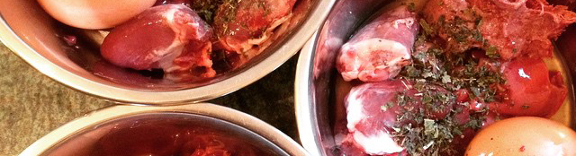
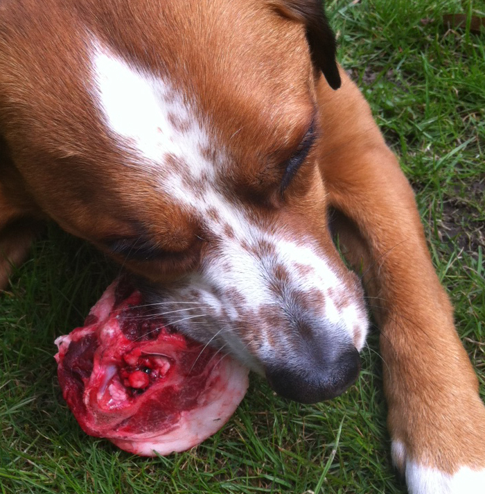

Raw feeding is a different way of feeding your dog, based on a diet of raw meat and bones. There are many "models" of raw feeding, like BARF (biologically appropriate raw food), RMB (raw meaty bones), and the Prey Diet, but the basics are all similar - as the word "raw" suggests, all the food you give is raw and uncooked. And it's up to you to decide whether you want the "blood, guts and gore" or not! If you see yourself like Don Corleone then, after some research, you could raw feed based on carcasses, raw meaty bones, and lumps of meat. However, if you do not feel so brave, as many don't, then you can buy "pre-made raw", which is pretty much the same as scooping food out of a tin, as it's basically mince, which you store in the freezer and fridge instead of the cupboard. As to what can be served up, whether whole, chunked or minced, think chicken, beef, turkey, lamb, rabbit, pheasant, venison, goat, and even wood pigeon, which is a firm favourite in my house!

Why do people feed raw?
Many people turn to raw feeding when their pets are ill or have allergies, or simply because their pets just don't eat well. Fortunately many of these problems clear up once they feed a raw diet. Other people turn to raw feeding because they feel it's a more natural and healthy way of feeding. As with humans, they want to provide fresh unprocessed food and a varied diet for their pets, and to be in charge of the ingredients, both in terms of sourcing and quality. Many people also want to be able to adjust diets for individual pets' preferences. Once started, most pets (and owners) benefit enormously from better intestinal health (i.e. less being gassed out of your own living room), less waste (poo), better skin condition, more enjoyment of food, better teeth and breath... and these are just a few of the benefits!
My own experience of turning to raw feeding is very typical. I had 3 dogs, one who didn't like any of the dried or tinned food I tried; one who had dry, flaky skin; and one who had constant tummy problems which made him hyper-active. All of them were gassy, needed their teeth cleaning regularly, and runny poo was normal. I tried many different brands of dried and tinned food, dental sticks, and supplements like salmon oil, but nothing made a noticeable difference. So I started reading about canine physiology and biology, which obviously confirmed that most of these problems are heavily influenced by diet. But having tried most "good quality" dried and tinned foods, the only option left was to source and feed the "raw" ingredients myself. And what a difference it made! My fussy eater can't get enough; my other boy is no longer a walking snowflake; and my "tank-on-springs" can now relax. They now hardly ever gas us out, or have soft runny poo, unless of course they've scavenged something on a walk. Their coats are super shiny, their teeth are perfect without any help, and they are all a picture of health and happiness.
Whilst I was researching diets and nutrition, I joined several raw feeding Facebook groups, but I was disappointed, particularly with their dogmatic approaches to raw feeding, and the constant bickering and fall-outs which are so typical of Facebook. So I set up my own Facebook group, RawFeeding Rebels, and determined to make it a tolerant and friendly place, where people can learn, share, and be inspired. Over 8,000 members have joined since September 2013, and hundreds more join every month, so we seem to have hit the right note. You can join the "Group" via Facebook, or find out more by visiting our Facebook "Page" and www.rawfeedingrebels.com
As you might expect, the cost of raw feeding varies according to what you feed. Minced chicken obviously costs a lot less than rump steak! Adult dogs and cats should be fed around 2 - 3% of their weight each day, puppies and kittens have different guidelines depending on age. So a 20kg dog should be eating around 500g per day, and you can buy pre-made minced poultry i.e. chicken, turkey and duck, and beef, at prices comparable to dry and tinned food. Nowadays there are so many raw feeding options that there is something to fit everyone's pocket.
Costs can be greatly reduced by buying in bulk, sourcing locally from friendly butchers, and some even go as far as getting it straight from the abattoir.
It's also worth bearing in mind that many raw feeders have significantly lower vet bills, so the health benefits of raw feeding also mean lower costs.
Won't my whole household die a horrific bacterial death?
No, many people, including kids, the elderly and infirm, are still living and breathing even though they raw feed their dogs! One of the things we often hear about is the risk of salmonella and E.coli. There was a well-publicised US study (JAVMA 2001 & 2013) which said that raw food can "pose a risk", even no actual occurrences of salmonella or E.coli were found. Just like with the chicken fillets you prepare for yourself, hygiene is important when handling raw meat. Most of the UK suppliers batch test their products for salmonella and E.coli, and much of their food is human grade meats. I did a survey of 1,000 dog owners last year (301 feeding processed food/699 feeding raw food), which covered over 2448 dogs, and we found that no people or raw fed dogs had contracted either Salmonella or E.coli from raw dog food. 3 dogs however had been infected by dry dog food. The vast majority of infections were contracted from human food - the biggest risks being eating out and take-aways! It's also worth noting that dogs carry bacteria like salmonella anyway, regardless of diet. They carry it around and shed it in their poo - hence it is called waste!
Why are some vets against raw feeding?
Some vets are against raw feeding, but many sing it's praises and realise that a good diet is a vital building block for promoting your pets' good health - "you are what you eat" counts just as much for our illiterate furkids. Some vets are cautious about raw feeding because very little nutritional advice is given whilst they're studying to become a vet. They simply don't know enough about raw food and diets to be able to make a judgement or give advice. Most of the education they do receive, is focused upon processed foods, because that's what most of their clients feed. Another reason why some vets might be cautious about raw feeding, is that many vets are sponsored by processed pet food companies and sell their products. There are risks associated with all foodstuffs, but they appear to be very small. There is no evidence that raw food is more risky than processed food, but there is plenty of evidence that raw food is more healthy than processed food.
What about feeding bones, aren't they dangerous?
Bones can be dangerous for pets to eat, especially if they've been cooked, as they become brittle and splinter easily. Raw, uncooked bones are less brittle and dangerous, but there are still risks to be aware of. First though, it's important to realise that bone is only a small part of the diet, around 10%. Many people start raw feeding with pre-made food, where the bone is already minced up in the right quantities with the meat. But there are many benefits of feeding raw bones, so as and when the time comes to give that first chicken wing, it can be a little tense, but you do learn! Some dogs go a little loopy when confronted with a bone, and do need to learn how to chomp them. You also need to learn what they can handle, based on the size and breed of your pet. Most raw feeders will not feed leg or weight-bearing bones, as they are too hard for even dogs to crunch. Munching a chicken carcass though is very healthy, it's quite a work-out, and all that chomping releases happy chemicals (oxytocin etc) in their brains, making dogs calmer and more content, and far exceeding the attraction of your table legs or other furnishings! Chewing bones is also great for cleaning their lovely teeth - no longer will they need dental sticks, toothbrushes, or visits to the Vet for dental scrapes.
But you have to be sensible - always supervise, and don't feed cooked bones, or bones which are too big or hard for your pet. And, don't feed too much bone, 10% is fine. If you take it slowly, and let your pet learn how to chew and crunch and use it's teeth and jaws as nature intended, then you will both be richly rewarded.
Science, Myths & Dracula!
There are many studies of processed pet food, but few covering raw food. This is perhaps because processed food manufacturers have to analyse and justify their additives and industrial processes, whilst raw unprocessed food is intuitively healthy, and underpinned by simple knowledge of biology, physiology, and evolution.
Pets haven't evolved over the millennia on processed diets! Dogs are facultative carnivores, and cats are obligate carnivores, i.e. they can catch, kill, eat and digest prey, and they need meat. But dogs in particular are also highly adaptable, and can eat all sorts of things in order to survive. As we all know however, there is a big difference in the health and well-being of animals fed a diet "to thrive", and those fed a diet "to survive".
Have a good look at those lovely sharp, pointy teeth of your dog, and those powerful jaws. The big pointy dracula ones at the top and bottom of the mouth are "canines" - the very name of their mammalian group - these teeth are there to stab, grip, and hold meat. Then further up are the premolars, carnassials and molars, which are designed to cut, grip and crush bone. And then there's the jaw itself, which only moves up and down, like scissors, without the side-to-side motion required by omnivores, herbivores, and dried nugget eaters!
So what of the myths about pets eating raw food? What about the idea that once a dog has tasted blood it turns into a killing machine, ready to attack anything and everything? Well, considering that dogs are designed to eat meat and bone, and they have lived cooperatively with humans whilst eating meat and bone for many thousands of years, it seems plausible to suggest that they are intelligent enough to distinguish between "humans" and "food"! Perhaps they know better than we do "not to bite the hands that feed them"!
How to start raw feeding...
Start by emptying your freezer! Eat all that ice cream, and serve frozen peas for days on end, as you will need freezer space! Then do some research, so that you understand what a balanced raw diet is - this is very important! Most pets will thrive on diets of roughly 10% bone, 80% meats, 5% liver and 5% kidney. Then you can order the food. Make it easy for yourself to begin with, and try some pre-made food first, as it takes the worry out of things like how to deal with bones, and how to achieve a nutritionally balanced diet. Stick to something most pets like, for example chicken or turkey initially. Defrost it, spoon it into a bowl, and enjoy! No really, it is that simple, and you might even discover that your dog absolutely loves it, and loves you all the more for it, and is more healthy, shiny, clean-toothed, small-pooed, and less gaseous. And it doesn't matter whether your dog is 8 weeks, 5 or 12 years - just give it a whirl - you've everything to gain, and nothing to lose!
About the author
Judith began to research pet food in 2011, because her dog, Merz, was often ill and with a raw food diet, she soon had his problems licked!
She started Rawfeeding Rebels Facebook Group in 2013; an inspirational group with over 8,500 members.
Judith also is a keen animal welfare campaigner and has recently co-founded Service Dogs UK, which provides assistance dogs to PTSD sufferers from the Armed Forces and Emergency Services. Judith's dayjob is running MissyRedBoots Graphic and Web Design.
 Judith began to research pet food in 2011, because her dog, Merz, was often ill and with a raw food diet, she soon had his problems licked!
Judith began to research pet food in 2011, because her dog, Merz, was often ill and with a raw food diet, she soon had his problems licked!